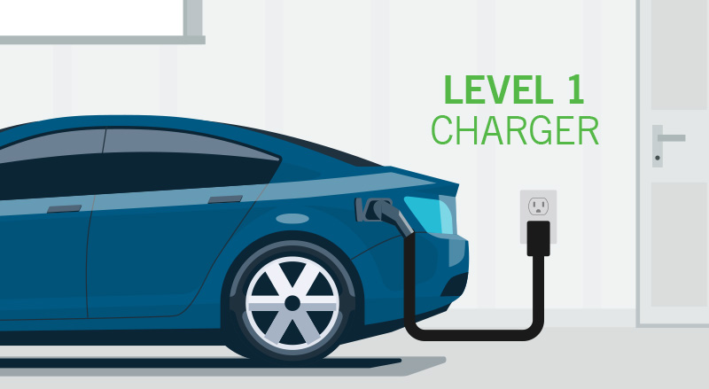
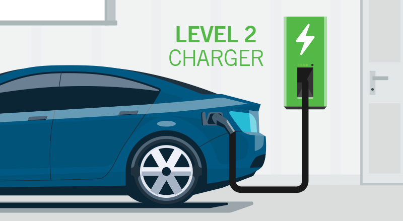
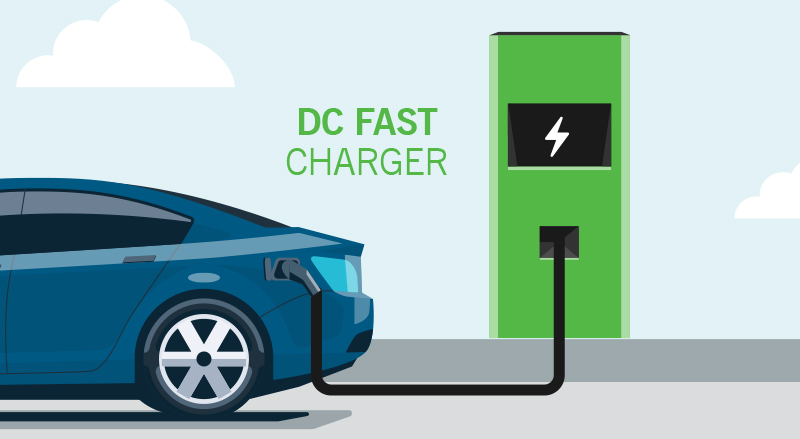

Introduction to EV Charging
Learn about the basics of electric vehicle charging, including types of chargers, charging times, and more.
Learn MoreTypes of EV Chargers

Level 1 Charger
Level 1 chargers use a standard household outlet and provide a slow charge rate.
- Up to 5 miles of range per hour
- No installation required – every EV will come with a standard Level 1 charger that you can drive home and plug into the wall
- Best used for overnight charging and low-mileage daily driving – a good option for plug-in hybrid vehicles because of their smaller batteries
- J1772 connector or Tesla connector (comes with vehicle)

Level 2 Charger
Level 2 chargers require a dedicated charging station and offer faster charging speeds than Level 1 chargers.
- Average of 25 miles of range per hour. Often found in public areas (rest areas, shopping centers, restaurants, etc.)
- Option to purchase and have it installed by a qualified electrician – can be either hardwired or plugged into an existing 240-volt outlet (dryer plug)
- Best for quick charging – can get a full charge from empty overnight (8-10 hours)
- J1772 connector or Tesla connector (comes with vehicle)

DC Fast Charger
DC fast chargers are high-powered chargers capable of providing rapid charging for EVs.
- Provides up to 250 miles of range per hour, depending on the car and charging equipment
- Can charge up to 80% typically in about 20 to 30 minutes
- Used to facilitate longer distance driving or road trips or for a quick recharge
- Most non-Tesla chargers have a CCS/SAE Combo connector
- Tesla DC fast chargers will only work with Tesla vehicles
Charging Times
| Charger Type | Average Charging Time |
|---|---|
| Level 1 Charger | 8-12 hours |
| Level 2 Charger | 4-8 hours |
| DC Fast Charger | 30 minutes - 1 hour |
Charging Tips
- Charge your EV overnight for convenience.
- Consider installing a Level 2 charger at home for faster charging.
- Plan your charging stops on long journeys using apps or websites.
- Avoid frequent use of DC fast chargers to prolong battery life.